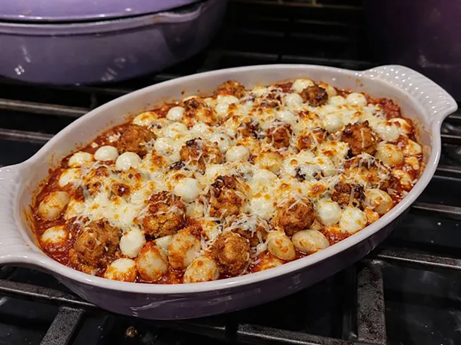

Home Page
Chicken Parmesan Gnocchi

It's a cheesy, irresistible comfort meal, and it's on the table in 30.
Ingredients
- 4 tablespoon of unsalted butter
- 1 pound of frozen tomato basil stuffed gnocchi
- 1 pound of lightly breaded chicken bites
- 1 small yellow onion, diced
- 4 cloves of garlic, minced
- 1/2 teaspoon of Aleppo chile flakes
- 1 teaspoon of salt
- 1 jar (24 ounces) of marinara sauce
- 6 ounces of pearlini mozzarella
- 4 ounces of freshly shredded Parmesan cheese
Steps
- Preheat the oven to 250 degrees F (120 degrees C).
- For gnocchi, heat 2 tablespoons butter in a large ovenproof skillet over medium heat.
Add gnocchi in a single layer. Cook until golden brown, flipping gently, 3 to 4 minutes per side.
Cook in batches if needed. Remove gnocchi and set aside in the oven to keep warm.
- For chicken, in the same skillet, add chicken bites. Cook until heated through and golden, turning occasionally, 6 to 8 minutes.
Remove chicken bites; set aside in the oven to keep warm.
- For sauce, add remaining butter to the skillet. Saute onion until translucent, about 3 minutes.
Add garlic and cook until fragrant, about 1 minute. Stir in Aleppo flakes, salt, and marinara sauce.
Simmer until warmed through, about 3 minutes.
- Return gnocchi to the pan; stir lightly to coat. Nestle in chicken bites. Top with mozzarella and Parmesan, and allow cheese to melt.
- Preheat the oven's broiler and place a rack about 6 inches from the heating element. Broil until golden, 1 to 2 minutes. Enjoy!